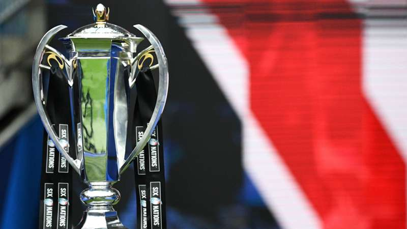

Descubre al campeón del invierno en el hemisferio norte. Aquí podrás encontrar información sobre los equipos, los partidos y la historia de este emocionante torneo.
El Torneo de las Seis Naciones es uno de los campeonatos de rugby más antiguos e importantes del mundo. Participan equipos nacionales de Inglaterra, Escocia, Gales, Irlanda, Francia e Italia.
Este torneo se inició en 1883 como el Campeonato de las Naciones Británicas, con la participación de Inglaterra, Escocia, Gales e Irlanda. En 1910, Francia se unió al campeonato, formando el Torneo de las Cinco Naciones. Finalmente, en el año 2000, Italia fue incluida, dando lugar al actual Torneo de las Seis Naciones.
Los seis equipos que compiten cada año son:
Cada año, estos equipos se enfrentan entre sí para determinar quién será coronado como el campeón del invierno en el hemisferio norte.

Puedes obtener más información sobre el torneo en la página oficial del Seis Naciones.